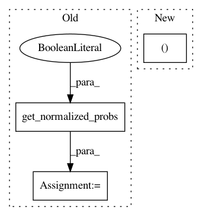

4294c4f6d72e6ac2b0315133adb26e83e99f0e62,fairseq/criterions/cross_entropy.py,CrossEntropyCriterion,forward,#CrossEntropyCriterion#Any#Any#Any#,22
Before Change
3) logging outputs to display while training
net_output = model(**sample["net_input"])
lprobs = model.get_normalized_probs(net_output, log_probs=True)
lprobs = lprobs.view(-1, lprobs.size(-1))
target = model.get_targets(sample, net_output).view(-1)
loss = F.nll_loss(lprobs, target, size_average=False, ignore_index=self.padding_idx,
reduce=reduce)
sample_size = sample["target"].size(0) if self.args.sentence_avg else sample["ntokens"]
logging_output = {
"loss": utils.item(loss.data) if reduce else loss.data,
"ntokens": sample["ntokens"],
After Change
3) logging outputs to display while training
net_output = model(**sample["net_input"])
loss, _ = self.compute_loss(model, net_output, sample, reduce=reduce)
sample_size = sample["target"].size(0) if self.args.sentence_avg else sample["ntokens"]
logging_output = {
"loss": utils.item(loss.data) if reduce else loss.data,
In pattern: SUPERPATTERN
Frequency: 4
Non-data size: 3
Instances
Project Name: pytorch/fairseq
Commit Name: 4294c4f6d72e6ac2b0315133adb26e83e99f0e62
Time: 2019-02-22
Author: myleott@fb.com
File Name: fairseq/criterions/cross_entropy.py
Class Name: CrossEntropyCriterion
Method Name: forward
Project Name: elbayadm/attn2d
Commit Name: ef17941545c6d742de717d9769b2a412d9924e4e
Time: 2018-06-15
Author: myleott@fb.com
File Name: fairseq/sequence_generator.py
Class Name: SequenceGenerator
Method Name: _decode